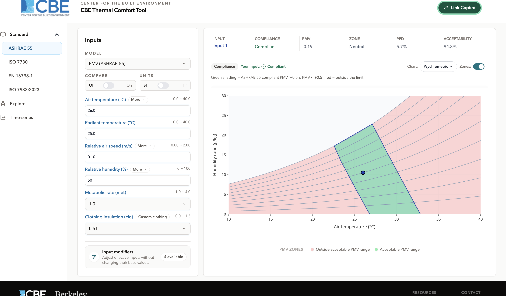

Sharing a calculation
Overview
The Share button in the header copies a link that reproduces the calculation you are looking at. Send it to a colleague, paste it into a report or a ticket, and they open the tool with your inputs already filled in and your chart already selected.
Nothing is uploaded. The calculation is encoded into the link itself, so the tool needs no account, no server and no stored session to reproduce it.

How it works
The link is the workspace URL with a ?state= parameter appended. The parameter holds the whole
calculation, encoded as text. The path still identifies the workspace and model, so a share link remains
readable at a glance:
Clicking the button copies the link to your clipboard and confirms it. The address bar does not change as you work the link is generated when you ask for it, not maintained continuously.
What the link carries
| Carried | Detail |
|---|---|
| Workspace and model | From the path. |
| All input values | For every input set, not only the visible ones. |
| Compare state | Whether compare is on, which sets are visible, and which is active. |
| Unit system | SI or IP, so the recipient sees the numbers as you did. |
| Entry modes | Temperature mode, humidity input mode, air-speed control mode. |
| Input modifiers | Which are enabled, per input set, and their values. |
| Chart selection | Which chart is showing. |
| Chart settings | Axis choices, the selected output, the baseline input, and any edited bands. |
What the link does not carry
- Results. Only inputs are encoded; the recipient's browser recalculates them. Two people opening the same link get the same answer because the calculation is deterministic, not because the answer was sent.
- Anything personal. No account, no identity, no history just the values you entered.
- A Time-series scenario. See below.
Sharing is not available in Time-series
To circulate a Time-series result today, export the charts from the chart menu. Recreating the scenario elsewhere means re-entering the segments.
If a link does not open correctly
Links are versioned, and the tool validates every value it reads before using it. A link that has been truncated in an email, or that was made by a version of the tool whose inputs have since changed, falls back to the defaults rather than opening a half-restored calculation. If a shared link does not look right, ask for it to be re-copied and check that it was not broken across a line.
Where to go next
- Compare mode comparisons travel intact in a link.
- Charts and chart controls exporting an image, which is the alternative to a link.